Contents of page/chapter:
+Introduction & Terminology
+General TAP Search: Overview
+More About Selecting Tables
+ObsTAP
+VO TAP: More about constraints
+VO ObsCore: More about constraints
+Interactive Target Refinement
+ADQL
By using TAP and ObsTAP queries, you can use IRSA (or someone else's) services to talk to other archives that also comply with these standards, world-wide.
Firefly can help you interactively create ADQL which then you can copy and use in your own code elsewhere.
This section assumes you already know how to work with tables in Firefly.
When you first go to this tab, you need to Select TAP
Service. This is near the top of your screen:

At the top, you now have a choice of which TAP service you want to use,
and it defaults to IRSA's. You can select your favorite from the list,
or use the toggle on the left to enter your own custom URL. It will
remember your custom URL in the same session, so you can select it
again later.
If you want to hide this top row after setting it (to, say, regain
screen real estate), look for this on the far right:

the "TAP Services:" button (show/hide) will
reveal or conceal this top row.
The contents of the next section entitled "Tables" changes in response to which service you select. For IRSA services, as shown in the screen shot above, you first need to select the "project" (sometimes called "Table Collection" or "Schema" in other contexts). Then, having selected that, the drop-down menu on the right changes to reflect the tables available under that project. More explanation about this is below.
The last major section is Enter Constraints. On the left, you can impose a variety of constraints, sorted by type. In addition to selecting the tickbox indicating that you wish to impose a particular kind of constraints, you need to specify which columns should be used for those constraints. More information on these constraints is below. On the right is a list of the columns in the selected table, with tickboxes to indicate which columns will be returned. You can also set constraints on the columns from here, following the same filter rules as for any tables here. Above this section of the screen, there is an indication of which columns are selected (e.g., "45 of 298 columns selected"). You can reset the column selection via the button here as well.
Then to actually do it, click "Search."
⚠ Tips and Troubleshooting
For VizieR's services in particular, because there are so many tables,
the tool will give you a slightly different interface under the
"Tables" section of the window. Here is the default Vizier choices as
of this writing:
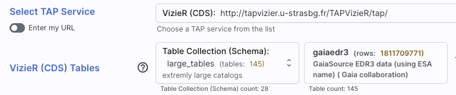
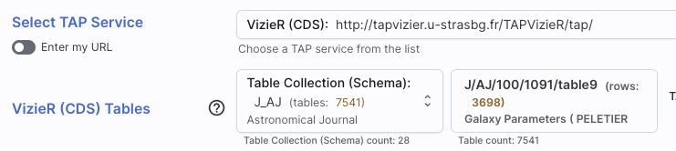
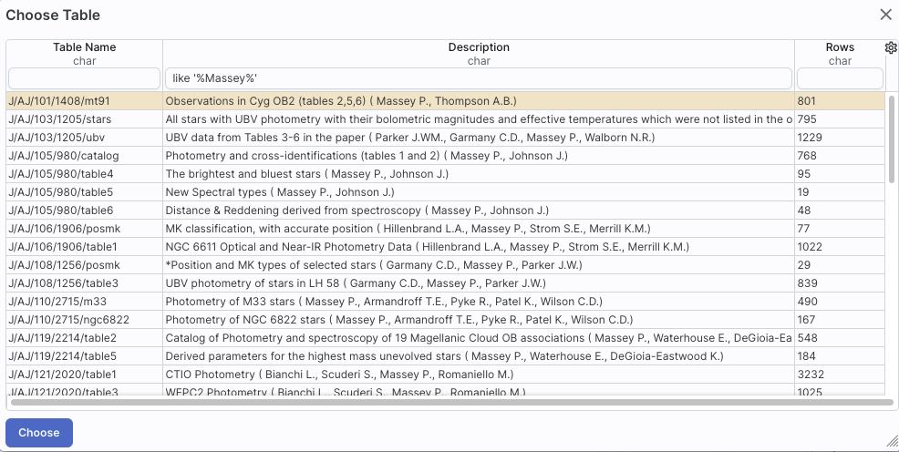
There is a "Use Image Search (ObsTAP)" toggle switch up in the "Tables" section. If you toggle that, you have different tables available to you. An ObsCore search is technically a subcategory of a TAP search, but it is a special subcategory in that it can return images, spectra, catalogs, and more, or even links to services. As such, it has a wholly different kind of constraints and results; see below.
You can have several different ways of constraining your search depending on the options you have selected before the "Enter Constraints" section, and the options depend on what kind of service is available at the TAP service you have selected. If the options do not appear initially, click on the downward arrow to "unfold" the options.
|
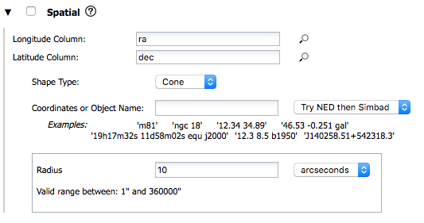 | This is what it looks like when you do a single target cone search; note that you have the same name resolution options as in any other search in this tool. |
|
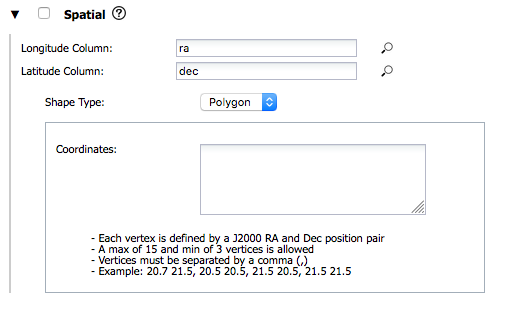 |
And, this is what it looks like when you do a single target polygon
search. The search areas here (visible, selection, and
custom) are the same as when you do a polygon search on catalog -- that is, you can select whether
you want the catalog request to match the entire area of the image you
have selected ("image"), or just the portion of the image you can see
in the current view ("visible"), or your own ("custom") area. The list
of vertices in the coordinates box are in decimal RA and Dec in
degrees. You must enter at least 3 and at most 15 vertices, separated
by a comma.
You can also click on this icon |
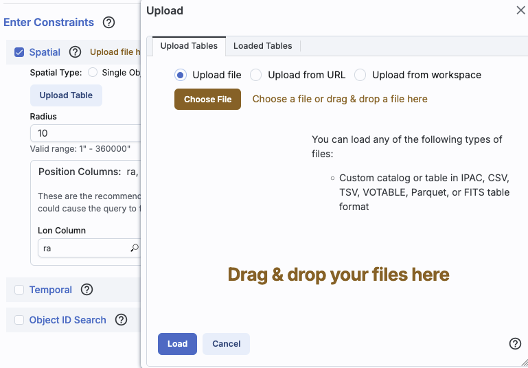 | If you want to perform a multi-target search, click on "multi-object", which automatically brings up this pop-up, from which you can load a table from disk ("Upload tables" tab) or select one of the tables you have already loaded into the tool (click on the "Loaded tables" tab). Your uploaded catalog has to follow all the same rules as normal catalogs from disk. |
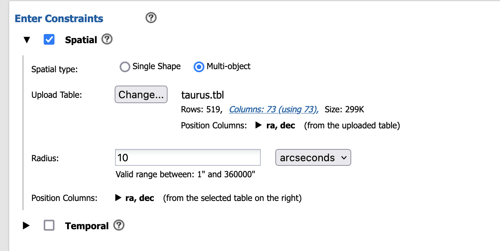 | After you find your file with your listed positions and upload it, the tool attempts to guess which two columns are the position columns. In this example, it has (correctly) guessed that the position columns are "ra" and "dec". If it guesses wrong, or can't figure it out, you can help it along by clicking on the down-arrow to 'expand' that part of the panel and selecting the two coordinate columns to use. |
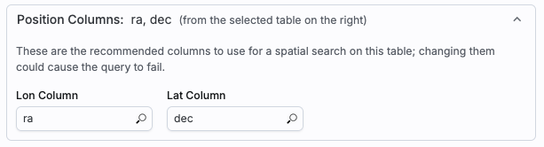 | Regardless of what configuration you use, the last thing to check is which columns the tool has assumed are the position columns in the catalog to be matched to your position, region, or list of positions. Again, it attempts to make an educated guess as to the right columns, but if it guesses wrong, you can help it along by clicking on the down-arrow to 'expand' that part of the panel and selecting the two coordinate columns to use. |
| This is what the panel looks like initially, where you specify the column in the catalog you are searching with the time and then the dates. If you don't remember what the column is in the catalog, click on the magnifying glass to get a pop-up with a list of all of the columns. | 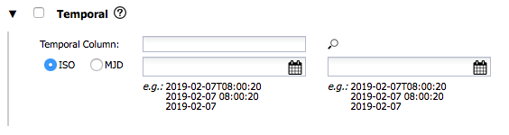 |
| For the dates and times, if you click on the calendar icon at the far right of the entry box, you get a pop-up from which you can specify the date and time, shown here. | 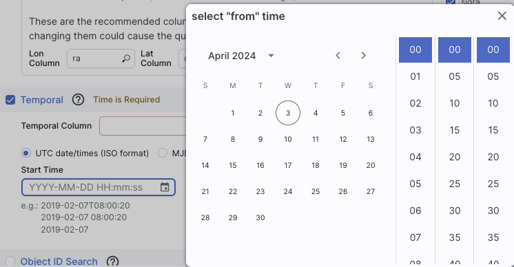 |
| If you would like to work in MJD instead of ISO dates, select the "MJD" radio button. Note that it echoes below the box what it thinks you've entered in two different systems (UTC and MJD) to verify what you have entered. | 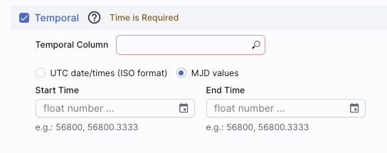 |
| This is what the panel looks like initially: | 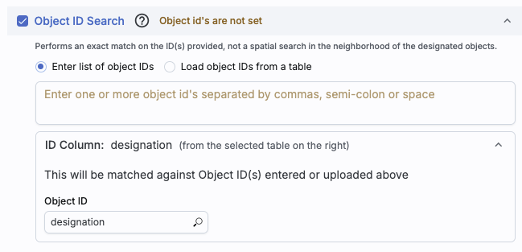 |
| This is what the panel looks like after you have selected your uploaded list of IDs (in this case, a file called "gaiaids.tbl", which consists of an IPAC table file that is just the list of Gaia IDs, in a column called "gaiaid"), and it is being matched against the Gaia DR3 main catalog, where the relevant field is "source_id". | 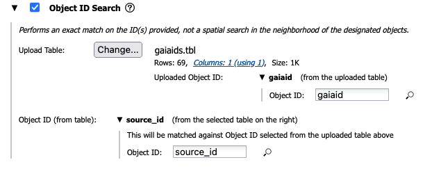 |
⚠ Tips and Troubleshooting
These are several additional ways of constraining your search depending on the options you have selected before the "Enter Constraints" section. These options appear if you have selected an ObsCore search. If all of these options do not appear initially, click on the downward arrow to "unfold" the options.
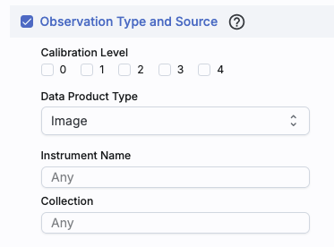 |
This panel provides a way to constrain the:
|
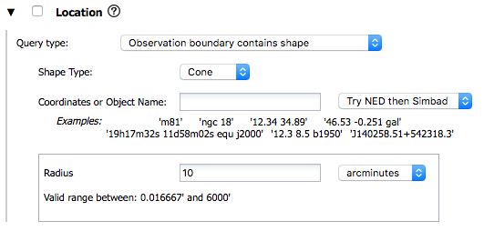 |
This panel provides a way to constrain the location of your
search. Here, it is a single object search, which works just like it
does above, including the interactive
target refinement via the bullsye icon. You can also upload a
list of targets by selecting "multi-object" -- it brings up the same
pop-up as above, from which you can load a table from disk ("Upload
tables" tab) or select one of the tables you have already loaded into
the tool (click on the "Loaded tables" tab). Your uploaded catalog
has to follow all the same rules as normal catalogs from disk.
|
You can specify via the drop-down the type of your query: "observation boundary contains point", "observation boundary contains shape", "observation boundary is contained by shape", "observation boundary intersects shape", and "central point (s_ra, s_dec) is contained by shape." The latter refers to the columns "s_ra" and "s_dec" in the ObsTAP table.
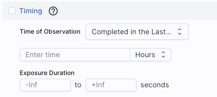 |
This panel provides a way to constrain the observation time of your search. This is the default option, where you want data completed in the last x hours (or other unit of time). |
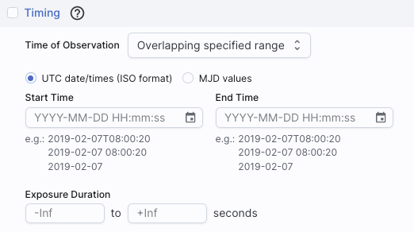 |
This is the alternate option, where you want data overlapping a specified date range, where you can specify UTC or MJD times. |
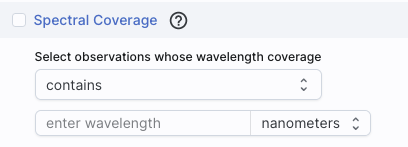 |
This panel provides a way to constrain the spectral coverage of your search. This is the default option, where you want data containing a given wavelength. |
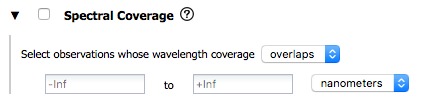 |
This is the alternate option, where you want data overlapping a specified wavelength range. |
 in
Firefly, you can click on it to bring up a window to
interactively refine your target selection via clicking on a
HiPS map. Here, we are using a TAP search to demonstrate this
process, but you can find this kind of target refinement in several
places in Firefly.
in
Firefly, you can click on it to bring up a window to
interactively refine your target selection via clicking on a
HiPS map. Here, we are using a TAP search to demonstrate this
process, but you can find this kind of target refinement in several
places in Firefly.
When you click on the icon you bring up a window:
 | If you have entered a target already, the window arrives already centered on the target. If not, it is centered on the galactic center, zoomed out. If you have entered a cone search radius already, then the circle drawn on the image is that cone size. You can manipulate this image with the same basic tools as in the visualization tools. |
 |
To change the search region interactively, choose the selection
tools and draw a shape on the image. Note that if you have selected a cone search on the left, no matter what you select on the right, it will give you a cone search. If you change the cone position or radius in the yellow boxes after you change the selection, it will update the region in the image. |
 | If you want to quit out of the selection without changing, click on "end selection" (the brown text near the top of the image). |
 | If you select polygon on the left, and you use the selection tool for "cone selection" on the right, you will get a spherical polygon (a polygon where the line segments are on a sphere). |
When you are done with this pop-up window, click on the 'x' in the upper right of the window. Then you can continue with whatever you were doing before you started to refine your target parameters.
On the far right of the top row, there is a slider that is, by default, set to "UI-assisted", as opposed to "Edit ADQL". Especially when starting out, UI-assisted is easier. By using the UI assisted" option, you can select pre-defined options and have the interface construct the query in ADQL. Alternatively, if you are already fluent in ADQL, you can select the second option, "Edit ADQL", to construct even more complex queries.
Configuring first, ADQL later
After populating the search parameters using the UI, you can click the button on the bottom, "Populate and edit ADQL" -- this takes the parameters you have entered, creates the ADQL, and launches the "Edit ADQL (advanced)" interface. Then you can copy the ADQL, or continue to edit and refine it.
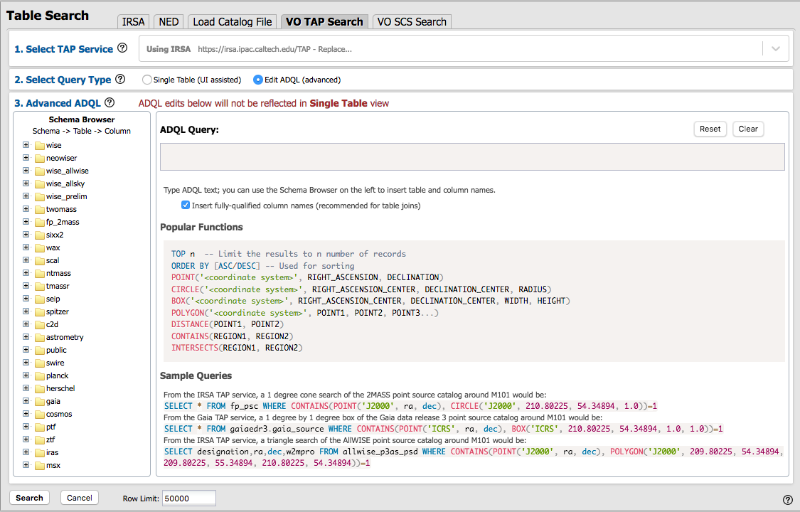
You can get to this screen by selecting "Edit ADQL (advanced)", or by clicking on "Populate and edit ADQL" after filling out the constraints.
You can select the schema from the left side of the screen. Each of the schemas can expand into viable tables and then columns within each table via clicking on the "+" to the left of the folder icon. Click on a column name to have it appear at the location of your cursor in the ADQL query box on the right. If you have the tickbox checked on the right that says "Insert fully-qualified column names", clicking on the column name inserts fully-qualified column names at your cursor location in the box.
You can type the ADQL directly into the box. If you configured a search on the "UI assisted" page, this box is already pre-filled with the ADQL version of your search, and you can proceed to edit it further.
Examples of useful functions and queries are given on the lower right of this window; you may need to scroll down.
⚠ Tips and Troubleshooting